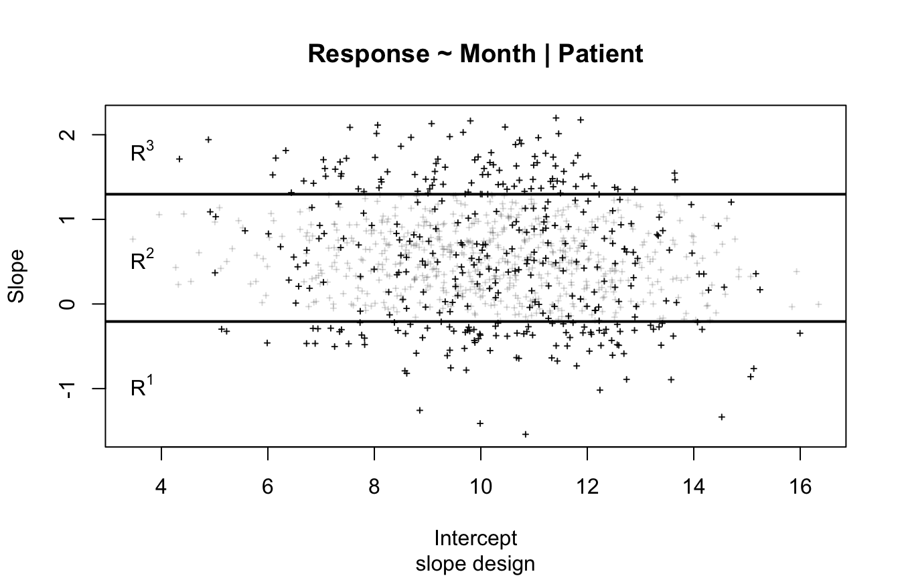
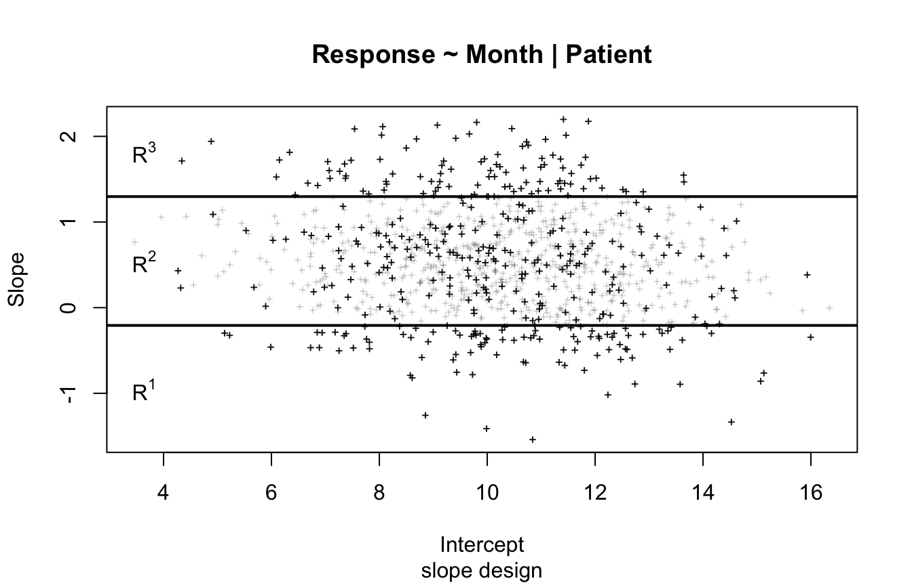
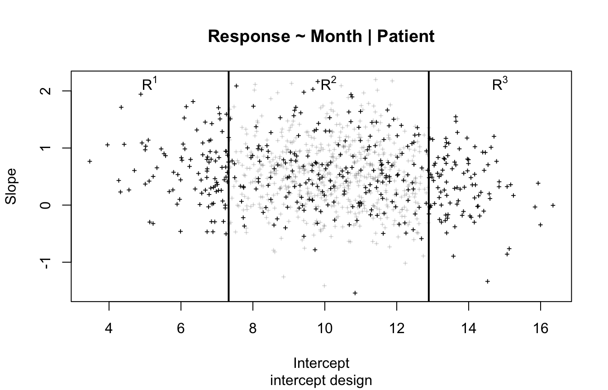
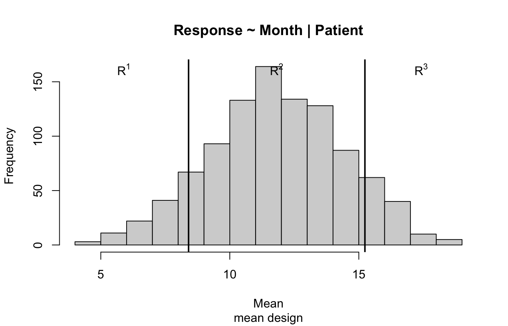
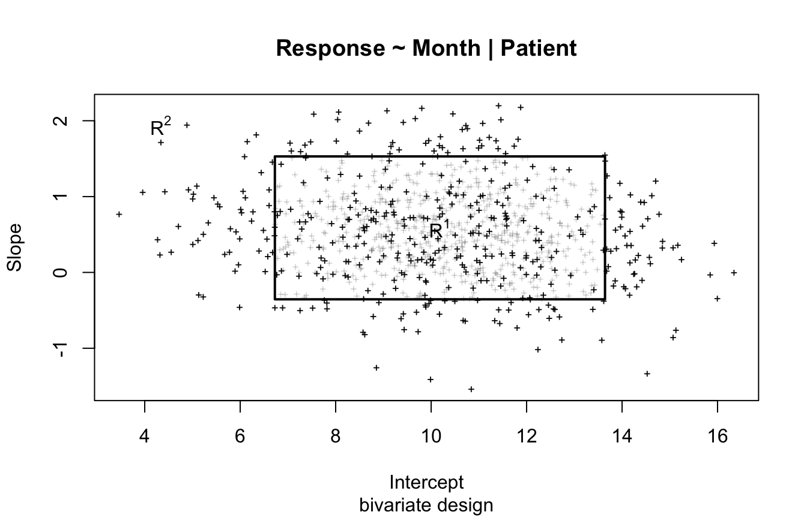
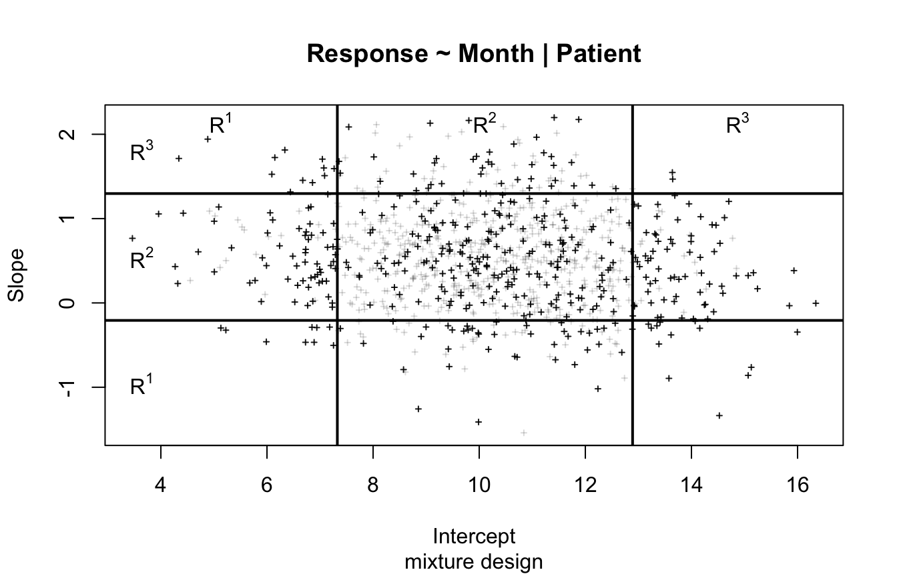

str(gbti)
#> 'data.frame': 5000 obs. of 6 variables:
#> $ Patient : int 1 1 1 1 1 2 2 2 2 2 ...
#> $ Month : int 1 2 3 4 5 1 2 3 4 5 ...
#> $ Ancestry: Factor w/ 2 levels "Hispanic","Non-Hispanic": 2 2 2 2 2 1 1 1 1 1 ...
#> $ Response: num 7.78 7.56 8.77 9.73 7.3 ...
#> $ pSample : num 0.25 0.25 0.25 0.25 0.25 0.25 0.25 0.25 0.25 0.25 ...
#> $ Genotype: logi FALSE FALSE FALSE FALSE FALSE NA ...ODSMethods Progress Report
Package functionality and slope-sampling simulation performance
1 Overview
This report summarizes the current progress of the ODSMethods R package. The package is being developed for outcome-dependent sampling (ODS) methods in two-phase study design for longitudinal data.
Here we demonstrate what the package can currently do with different input/design settings, and present estimate bias and standard error bias for ACML and multiple imputation (MI) under a slope-based ODS example.
2 Package Motivation
Outcome-dependent sampling is useful when the longitudinal outcome is available for a full phase-I cohort, but an exposure or biomarker is expensive and can only be measured in a phase-II subset.
The package currently supports:
- constructing ODS and BDS two-phase sampling designs;
- visualizing the selected sampling regions;
- fitting ascertainment-corrected maximum likelihood (ACML) models;
- fitting weighted likelihood models.
3 Example Phase-I Data
The package includes a simulated longitudinal dataset, gbti.
data.frame(
rows = nrow(gbti),
subjects = length(unique(gbti$Patient)),
visits_per_subject = length(unique(gbti$Month)),
genotyped_subjects = length(unique(gbti$Patient[!is.na(gbti$Genotype)])),
missing_genotype_rows = sum(is.na(gbti$Genotype))
)The minimum design input is a long-format dataset with:
- a longitudinal response, here
Response; - a time variable, here
Month; - a subject identifier, here
Patient; - design choices such as sampling method, sampling probabilities, and cutpoints or quantiles.
head(gbti)4 Design Formula
The design interface uses a formula of the form:
Response ~ Month | PatientThis means:
Response: the longitudinal outcome;Month: the time variable;Patient: the subject ID.
5 Slope-Sampling Example
The main example uses slope sampling, where subjects with extreme estimated slopes (within subject variation) are sampled with higher probability.
slope_design <- ods(
Response ~ Month | Patient,
method = "slope",
p_sample = c(1, 0.25, 1),
data = gbti,
quantiles = c(0.10, 0.90)
)
summary(slope_design)
#>
#> Call:
#> ods(formula = Response ~ Month | Patient, method = "slope", p_sample = c(1,
#> 0.25, 1), data = gbti, quantiles = c(0.1, 0.9))
#>
#> Cutpoints:
#> slope
#> 1 -0.2073044
#> 2 1.2969380
#>
#> Response mean intercept slope
#> Min. 2.3427714 4.2388833 3.4636736 -1.5405884
#> 1st Qu. 9.8660120 10.1392107 8.7922158 0.1294732
#> Mean 11.8116566 11.8116566 10.2089674 0.5342298
#> Median 11.6908438 11.8154157 10.2606785 0.5154688
#> 3rd Qu. 13.6673592 13.6123603 11.6923957 0.9231523
#> Max. 23.3867489 18.4012563 16.3443191 2.1980391
#>
#> N Patient E[N_sample]
#> 5000 1000 0plot(slope_design)
The design object keeps the full phase-I dataset and adds design columns that can be carried into the phase-II study.
format_design_columns(slope_design$data, c(
"Patient", "Month", "Response", "method_i",
"acml_samp_prob_i", "cutpoints_i", "sampled"
))data.frame(
total_subjects = length(unique(slope_design$data$Patient)),
sampled_subjects = length(slope_design$sample_ids),
sampled_rows = sum(slope_design$data$sampled == 1),
observed_genotype_rows = sum(!is.na(slope_design$data$Genotype))
)6 BDS Example
bds_slope_design <- bds(
Response ~ Month | Patient,
method = "slope",
p_sample = c(1, 0.25, 1),
data = gbti,
quantiles = c(0.10, 0.90)
)
summary(bds_slope_design)
#> $call
#> bds(formula = Response ~ Month | Patient, method = "slope", p_sample = c(1,
#> 0.25, 1), data = gbti, quantiles = c(0.1, 0.9))
#>
#> $cutpoints
#> slope
#> 1 -0.2073044
#> 2 1.2969380
#>
#> $digits
#> [1] 7
#>
#> $descriptive
#> Response mean intercept slope
#> Min. 2.3427714 4.2388833 3.4636736 -1.5405884
#> 1st Qu. 9.8660120 10.1392107 8.7922158 0.1294732
#> Mean 11.8116566 11.8116566 10.2089674 0.5342298
#> Median 11.6908438 11.8154157 10.2606785 0.5154688
#> 3rd Qu. 13.6673592 13.6123603 11.6923957 0.9231523
#> Max. 23.3867489 18.4012563 16.3443191 2.1980391
#>
#> $N
#> N Patient E[N_sample]
#> 5000 1000 400
#>
#> attr(,"class")
#> [1] "summary.bdsdesign"plot(bds_slope_design)
format_design_columns(bds_slope_design$data, c(
"Patient", "Month", "Response", "method_i",
"acml_samp_prob_i", "cutpoints_i", "sampled"
))data.frame(
total_subjects = length(unique(bds_slope_design$data$Patient)),
sampled_subjects = length(unique(bds_slope_design$data$Patient[bds_slope_design$data$sampled == 1])),
sampled_rows = sum(bds_slope_design$data$sampled == 1)
)7 Complete Two-Phase Workflow
This section shows the workflow of a two-phase study. The first step is done before the expensive covariate is measured. The second step is done after the phase-II data collection is complete.
7.1 Step 1: Choose The Study Design
Assume the phase-I clinical-trial data contain the longitudinal outcome and basic variables, but not the expensive covariate. Here Genotype is removed to mimic that setting.
phase1_data <- gbti[, setdiff(names(gbti), "Genotype")]
phase1_design <- ods(
Response ~ Month | Patient,
method = "slope",
p_sample = c(1, 0.25, 1),
data = phase1_data,
quantiles = c(0.10, 0.90)
)
summary(phase1_design)
#>
#> Call:
#> ods(formula = Response ~ Month | Patient, method = "slope", p_sample = c(1,
#> 0.25, 1), data = phase1_data, quantiles = c(0.1, 0.9))
#>
#> Cutpoints:
#> slope
#> 1 -0.2073044
#> 2 1.2969380
#>
#> Response mean intercept slope
#> Min. 2.3427714 4.2388833 3.4636736 -1.5405884
#> 1st Qu. 9.8660120 10.1392107 8.7922158 0.1294732
#> Mean 11.8116566 11.8116566 10.2089674 0.5342298
#> Median 11.6908438 11.8154157 10.2606785 0.5154688
#> 3rd Qu. 13.6673592 13.6123603 11.6923957 0.9231523
#> Max. 23.3867489 18.4012563 16.3443191 2.1980391
#>
#> N Patient E[N_sample]
#> 5000 1000 0The output suggests which subjects should be selected for phase-II measurement.
phase2_subjects <- unique(phase1_design$data$Patient[phase1_design$data$sampled == 1])
data.frame(
phase1_subjects = length(unique(phase1_design$data$Patient)),
selected_phase2_subjects = length(phase2_subjects),
selected_phase2_rows = sum(phase1_design$data$sampled == 1)
)The study team can export this subject list for lab measurements.
head(data.frame(Patient = phase2_subjects))7.2 Step 2: Analyze The Completed Phase-II Data
After phase-II data collection, the expensive covariate is available for the selected subjects. In this example, we create a completed lab result table for the selected subjects.
phase2_patient_info <- unique(
gbti[gbti$Patient %in% phase2_subjects, c("Patient", "Ancestry", "Genotype")]
)
phase2_patient_info <- phase2_patient_info[!duplicated(phase2_patient_info$Patient), ]
set.seed(20260520)
missing_genotype <- is.na(phase2_patient_info$Genotype)
prob_genotype <- 0.10 + 0.15 * (phase2_patient_info$Ancestry == "Hispanic")
phase2_patient_info$Genotype[missing_genotype] <- as.logical(
rbinom(sum(missing_genotype), 1, prob_genotype[missing_genotype])
)
phase2_lab_results <- phase2_patient_info[, c("Patient", "Genotype")]
analysis_data <- merge(
phase1_design$data,
phase2_lab_results,
by = "Patient",
all.x = TRUE
)
data.frame(
analysis_rows = nrow(analysis_data),
phase2_lab_subjects = nrow(phase2_lab_results),
subjects_with_genotype = length(unique(analysis_data$Patient[!is.na(analysis_data$Genotype)])),
rows_with_genotype = sum(!is.na(analysis_data$Genotype))
)The design columns created before phase-II are kept in the analysis dataset: method_i, acml_samp_prob_i, cutpoints_i, and sampled.
format_design_columns(analysis_data, c(
"Patient", "Month", "Response", "Genotype",
"method_i", "acml_samp_prob_i", "cutpoints_i", "sampled"
))Now rebuild the design object from the stored design columns and fit the ACML analysis model.
completed_design <- ods(
Response ~ Month | Patient,
data = analysis_data,
method_name = "method_i",
acml_samp_prob_name = "acml_samp_prob_i",
cutpoints_name = "cutpoints_i",
sampled_name = "sampled"
)
completed_fit <- acml(Response ~ Month * Genotype, completed_design)
summary(completed_fit, digits = 3, transform = TRUE)
#>
#> Calls:
#> ods(formula = Response ~ Month | Patient, data = analysis_data,
#> method_name = "method_i", acml_samp_prob_name = "acml_samp_prob_i",
#> cutpoints_name = "cutpoints_i", sampled_name = "sampled")
#> acml(formula = Response ~ Month * Genotype, design = completed_design)
#>
#> Cutpoints:
#>
#> Fixed Effects:
#> Estimate Std. Error L95 U95 z value Pr(>|z|)
#> 10.126 0.114 9.902 10.350 88.6 <2e-16 ***
#> 0.518 0.023 0.472 0.564 22.2 <2e-16 ***
#> -0.254 0.282 -0.807 0.300 -0.9 0.3691
#> 0.128 0.058 0.014 0.242 2.2 0.0284 *
#> ---
#> Signif. codes: 0 '***' 0.001 '**' 0.01 '*' 0.05 '.' 0.1 ' ' 1
#>
#> Random Effects:
#> Estimate Std. Error L95 U95
#> Patient (Intercept) 1.836 0.086 1.676 2.012
#> Month 0.490 0.019 0.455 0.529
#> rho 0.151 0.057 0.040 0.258
#> Residual 1.008 0.020 0.969 1.049
#>
#> Number of Subjects: 1000
#> Number of Observations: 5000
#>
#> Std. errors approximated via delta method. Confidence intervals are computed on transformed scale and transformed back and will not be symmetric.This is the intended applied workflow: use ods() to define the phase-II sample, store the design columns, then use the same design information for the ACML analysis after data collection is complete.
8 Other Design Inputs
The same interface can specify other ODS designs.
intercept_design <- ods(
Response ~ Month | Patient,
method = "intercept",
p_sample = c(1, 0.25, 1),
data = gbti,
quantiles = c(0.10, 0.90)
)
mean_design <- ods(
Response ~ Month | Patient,
method = "mean",
p_sample = c(1, 0.25, 1),
data = gbti,
quantiles = c(0.10, 0.90)
)
bivariate_design <- ods(
Response ~ Month | Patient,
method = "bivariate",
p_sample = c(0.25, 1),
data = gbti,
quantiles = 0.80
)
mixture_design <- ods(
Response ~ Month | Patient,
method = "mixture",
p_sample = c(1, 0.25, 1),
data = gbti,
quantiles = c(0.10, 0.90),
prob_intercept = 0.70
)
designs <- list(
mean = mean_design,
intercept = intercept_design,
slope = slope_design,
bivariate = bivariate_design,
mixture = mixture_design
)
data.frame(
method = names(designs),
sampled_subjects = vapply(designs, function(x) length(x$sample_ids), integer(1)),
sampled_rows = vapply(designs, function(x) sum(x$data$sampled == 1), integer(1))
)plot(intercept_design)
plot(mean_design)
plot(bivariate_design)
plot(mixture_design)
9 Quantiles and Cutpoints
Users can define sampling regions either by empirical quantiles:
quantile_design <- ods(
Response ~ Month | Patient,
method = "slope",
p_sample = c(1, 0.25, 1),
data = gbti,
quantiles = c(0.10, 0.90)
)
quantile_design$cutpoints
#> slope
#> 1 -0.2073044
#> 2 1.2969380or by explicit cutpoints:
cutpoint_design <- ods(
Response ~ Month | Patient,
method = "slope",
p_sample = c(1, 0.25, 1),
data = gbti,
cutpoints = c(-0.20, 1.30)
)
cutpoint_design$cutpoints
#> slope
#> 1 -0.2
#> 2 1.310 Analysis Example: ACML
After the design is specified, acml() fits the corrected longitudinal model.
acml_fit <- acml(Response ~ Month * Genotype, slope_design)
summary(acml_fit, digits = 3, transform = TRUE)
#>
#> Calls:
#> ods(formula = Response ~ Month | Patient, method = "slope", p_sample = c(1,
#> 0.25, 1), data = gbti, quantiles = c(0.1, 0.9))
#> acml(formula = Response ~ Month * Genotype, design = slope_design)
#>
#> Cutpoints:
#>
#> Fixed Effects:
#> Estimate Std. Error L95 U95 z value Pr(>|z|)
#> 10.347 0.146 10.060 10.634 70.6 <2e-16 ***
#> 0.514 0.022 0.471 0.556 23.6 <2e-16 ***
#> -0.433 0.354 -1.127 0.261 -1.2 0.2209
#> 0.134 0.053 0.030 0.238 2.5 0.0117 *
#> ---
#> Signif. codes: 0 '***' 0.001 '**' 0.01 '*' 0.05 '.' 0.1 ' ' 1
#>
#> Random Effects:
#> Estimate Std. Error L95 U95
#> Patient (Intercept) 2.465 0.103 2.272 2.675
#> Month 0.434 0.018 0.400 0.470
#> rho 0.102 0.054 -0.003 0.206
#> Residual 1.010 0.021 0.970 1.051
#>
#> Number of Subjects: 1000
#> Number of Observations: 5000
#>
#> Std. errors approximated via delta method. Confidence intervals are computed on transformed scale and transformed back and will not be symmetric.coef(acml_fit, transform = TRUE)
#> <NA> <NA> <NA>
#> 10.3469601 0.5135114 -0.4333427 0.1338510 2.4652433 0.4338196 0.1023727
#> <NA>
#> 1.009710911 Analysis Example: Weighted Likelihood
Weighted likelihood can use an existing sampling weight column.
weighted_design <- ods(
Response ~ Month | Patient,
method = "intercept",
p_sample = c(1, 0.25, 1),
data = gbti,
quantiles = c(0.10, 0.90),
weights = "pSample"
)
wl_fit <- WL(Response ~ Month, weighted_design)
summary(wl_fit, digits = 3, transform = TRUE)
#>
#> Calls:
#> ods(formula = Response ~ Month | Patient, method = "intercept",
#> p_sample = c(1, 0.25, 1), weights = "pSample", data = gbti,
#> quantiles = c(0.1, 0.9))
#> WL(formula = Response ~ Month, design = weighted_design)
#>
#> Cutpoints:
#>
#> Fixed Effects:
#> Estimate Std. Error L95 U95 z value Pr(>|z|)
#> 10.160 0.250 9.670 10.651 41 <2e-16 ***
#> 0.484 0.047 0.391 0.577 10 <2e-16 ***
#> ---
#> Signif. codes: 0 '***' 0.001 '**' 0.01 '*' 0.05 '.' 0.1 ' ' 1
#>
#> Random Effects:
#> Estimate Std. Error L95 U95
#> Patient (Intercept) 3.362 0.186 3.016 3.747
#> Month 0.584 0.039 0.513 0.666
#> rho -0.098 0.085 -0.260 0.069
#> Residual 1.035 0.030 0.978 1.095
#>
#> Number of Subjects: 1000
#> Number of Observations: 5000
#>
#> Std. errors approximated via delta method. Confidence intervals are computed on transformed scale and transformed back and will not be symmetric.12 Analysis Example: Multiple Imputation
For MI, the phase-I data contain the longitudinal outcome and inexpensive covariates for everyone, while the expensive continuous covariate is observed only in the phase-II sample.
set.seed(20260522)
n_subject <- 45
n_visit <- 4
id <- rep(seq_len(n_subject), each = n_visit)
time <- rep(0:(n_visit - 1), times = n_subject)
conf_subject <- rnorm(n_subject)
grp_subject <- rnorm(n_subject, mean = 0.30 * conf_subject, sd = 1)
b0_subject <- rnorm(n_subject, mean = 0, sd = 1.50)
b1_subject <- rnorm(n_subject, mean = 0, sd = 0.30)
mi_data <- data.frame(
id = id,
time = time,
conf = rep(conf_subject, each = n_visit),
grp = rep(grp_subject, each = n_visit)
)
mi_data$y <- 3 +
0.70 * mi_data$grp +
0.20 * mi_data$time +
0.50 * mi_data$conf +
0.15 * mi_data$grp * mi_data$time +
rep(b0_subject, each = n_visit) +
rep(b1_subject, each = n_visit) * mi_data$time +
rnorm(nrow(mi_data), sd = 1)
slope_by_id <- tapply(
seq_len(nrow(mi_data)),
mi_data$id,
function(row_id) coef(lm(y ~ time, data = mi_data[row_id, , drop = FALSE]))[2]
)
slope_cutpoints <- as.numeric(quantile(slope_by_id, probs = c(0.20, 0.80)))
samp_region_by_id <- as.integer(cut(
slope_by_id,
breaks = c(-Inf, slope_cutpoints, Inf)
))
samp_prob_by_id <- setNames(c(1, 0.45, 1)[samp_region_by_id], names(slope_by_id))
mi_data$samp_prob <- samp_prob_by_id[as.character(mi_data$id)]
mi_data$wt <- mi_data$samp_prob
mi_design <- ods(
y ~ time | id,
method = "slope",
p_sample = c(1, 0.45, 1),
data = mi_data,
cutpoints = slope_cutpoints,
weights = "wt"
)
mi_design$data$grp[mi_design$data$sampled == 0] <- NA
data.frame(
phase1_subjects = length(unique(mi_design$data$id)),
selected_phase2_subjects = length(unique(mi_design$data$id[mi_design$data$sampled == 1])),
sampling_probabilities = paste(sort(unique(mi_design$data$samp_prob)), collapse = ", "),
rows_missing_expensive_covariate = sum(is.na(mi_design$data$grp))
)mi_fit <- MI(
y ~ grp * time + conf,
mi_design,
exposure = grp,
exposure_model = ~ conf,
M = 2,
n_imp = 1,
L = 5,
seed = 20260522
)
mi_summary <- summary(mi_fit)
knitr::kable(
data.frame(
parameter = rownames(mi_summary$coefficients)[seq_len(mi_summary$n_fixed)],
round(mi_summary$coefficients[seq_len(mi_summary$n_fixed), c("Estimate", "Std. Error")], 3),
row.names = NULL
)
)| parameter | Estimate | Std..Error |
|---|---|---|
| (Intercept) | 3.156 | 0.311 |
| grp | 0.733 | 0.400 |
| time | 0.019 | 0.088 |
| conf | -0.009 | 0.392 |
| grp:time | 0.255 | 0.086 |
13 Existing Phase-II Design Columns
If the sampling design has already been generated and stored in the dataset, the package can rebuild a design object using those columns.
rebuilt_design <- ods(
Response ~ Month | Patient,
data = slope_design$data,
method_name = "method_i",
acml_samp_prob_name = "acml_samp_prob_i",
cutpoints_name = "cutpoints_i",
sampled_name = "sampled"
)
data.frame(
object_class = class(rebuilt_design)[1],
total_subjects = length(unique(rebuilt_design$data$Patient)),
sampled_subjects = length(unique(rebuilt_design$data$Patient[rebuilt_design$data$sampled == 1])),
sampled_rows = sum(rebuilt_design$data$sampled == 1)
)
format_design_columns(rebuilt_design$data, c(
"Patient", "Month", "Response", "method_i",
"acml_samp_prob_i", "cutpoints_i", "sampled"
))14 Simulation Study: ACML and MI Bias
The simulation compares ACML and MI under slope sampling. For this report, the focus is estimate bias (%) and standard error bias (%).
14.1 Simulation Setting
The simulation setting follows a linear mixed model with slope-based phase-II sampling.
The two performance metrics shown here are:
- estimate bias (%), comparing the average estimate with the true parameter;
- SE bias (%), comparing the average model-based SE with the empirical SD.
14.2 Estimate Bias
estimate_bias_table <- data.frame(
parameter = sim_results$parameter,
true = fmt_num(sim_results$true_acml),
acml_mean = fmt_num(sim_results$mean_est_acml),
mi_mean = fmt_num(sim_results$mean_est_mi),
estimate_bias_acml = sim_results$rel_bias_acml,
estimate_bias_mi = sim_results$rel_bias_mi
)
knitr::kable(estimate_bias_table)| parameter | true | acml_mean | mi_mean | estimate_bias_acml | estimate_bias_mi |
|---|---|---|---|---|---|
| Intercept | 75.000 | 75.000 | 75.013 | 0.00% | 0.02% |
| Time | -1.000 | -0.973 | -0.967 | -2.71% | -3.25% |
| SNP | -0.500 | -0.503 | -0.500 | 0.53% | -0.06% |
| Confounder | -2.000 | -1.996 | -2.011 | -0.20% | 0.53% |
| SNP x time | -0.250 | -0.254 | -0.246 | 1.44% | -1.77% |
| log SD(intercept) | 2.197 | 2.188 | 2.192 | -0.44% | -0.26% |
| log SD(slope) | 0.223 | 0.219 | 0.220 | -1.66% | -1.36% |
| RE correlation | 0.000 | 0.001 | 0.000 | NA | NA |
| log residual SD | 1.253 | 1.253 | 1.253 | -0.01% | 0.01% |
14.3 Standard Error Bias
This table compares the empirical standard deviation with the average estimated standard error.
se_bias_table <- data.frame(
parameter = sim_results$parameter,
emp_sd_acml = fmt_num(sim_results$emp_sd_acml),
mean_se_acml = fmt_num(sim_results$mean_se_acml),
se_bias_acml = sim_results$rel_bias_se_acml,
emp_sd_mi = fmt_num(sim_results$emp_sd_mi),
mean_se_mi = fmt_num(sim_results$mean_se_mi),
se_bias_mi = sim_results$rel_bias_se_mi
)
knitr::kable(se_bias_table)| parameter | emp_sd_acml | mean_se_acml | se_bias_acml | emp_sd_mi | mean_se_mi | se_bias_mi |
|---|---|---|---|---|---|---|
| Intercept | 0.636 | 0.618 | -2.82% | 0.335 | 0.339 | 1.24% |
| Time | 0.595 | 0.597 | 0.21% | 0.589 | 0.585 | -0.81% |
| SNP | 0.067 | 0.067 | 0.65% | 0.053 | 0.052 | -3.29% |
| Confounder | 0.658 | 0.673 | 2.27% | 0.433 | 0.423 | -2.21% |
| SNP x time | 0.061 | 0.060 | -0.71% | 0.054 | 0.054 | 0.12% |
| log SD(intercept) | 0.051 | 0.049 | -4.04% | 0.026 | 0.025 | -0.87% |
| log SD(slope) | 0.048 | 0.049 | 2.11% | 0.033 | 0.034 | 0.46% |
| RE correlation | 0.114 | 0.112 | -1.54% | 0.085 | 0.084 | -1.47% |
| log residual SD | 0.023 | 0.023 | -1.18% | 0.011 | 0.011 | -0.37% |
15 Input Checks
The package gives targeted messages for common input mistakes.
show_error <- function(expr) {
out <- try(expr, silent = TRUE)
if (!inherits(out, "try-error")) return("No error")
msg <- conditionMessage(attr(out, "condition"))
msg <- gsub("[\r\n]+", " ", msg)
msg <- gsub("\\*", "", msg)
msg <- gsub("\\s+", " ", msg)
trimws(msg)
}
input_checks <- data.frame(
input_problem = c(
"Missing | id in formula",
"Unknown sampling method",
"Wrong p_sample length for bivariate",
"Both quantiles and cutpoints supplied"
),
message = c(
show_error(ods(Response ~ Month,
method = "intercept", p_sample = c(1, 0.25, 1),
data = gbti, quantiles = c(0.10, 0.90)
)),
show_error(ods(Response ~ Month | Patient,
method = "random", p_sample = c(1, 0.25, 1),
data = gbti, quantiles = c(0.10, 0.90)
)),
show_error(ods(Response ~ Month | Patient,
method = "bivariate", p_sample = c(1, 0.25, 1),
data = gbti, quantiles = 0.80
)),
show_error(ods(Response ~ Month | Patient,
method = "slope", p_sample = c(1, 0.25, 1),
data = gbti, quantiles = c(0.10, 0.90),
cutpoints = c(-1, 1)
))
)
)
knitr::kable(input_checks, format = "html")| input_problem | message |
|---|---|
| Missing | id in formula | 1 assertions failed: Variable 'right-hand side of formula must be of the form time_formula|id, e.g. Response ~ Month|Patient or Response ~ Month + Age|Patient': Must be TRUE. |
| Unknown sampling method | 2 assertions failed: Variable 'method': Must comply to pattern '^(slope|intercept|bivariate|mean|mixture)$'. Variable 'when formula is Response ~ Month|Patient, method must be 'intercept', 'slope', 'bivariate', 'mean' or 'mixture'': Must be TRUE. |
| Wrong p_sample length for bivariate | 1 assertions failed: Variable 'p_sample': Must have length 2, but has length 3. |
| Both quantiles and cutpoints supplied | 2 assertions failed: Variable 'Either supply 'method' and 'p_sample' together with exactly one of 'quantiles' or 'cutpoints', or supply all of 'method_name', 'acml_samp_prob_name', 'cutpoints_name', and 'sampled_name'.': Must be TRUE. Variable 'only one of quantiles or cutpoints can be specified': Must be TRUE. |
16 Current Status and Discussion Points
What is working now:
- ODS and BDS design construction for
mean,intercept,slope,bivariate, andmixturedesign; - design summaries and plots;
- ACML and weighted likelihood fitting;
- basic input validation.
Next steps:
- MI treating \(X_e\) as ordinal, using
ormfunction; - what additional diagnostics should be added for
acml()andWL()objects; - Adding SMLE to the estimating functions.
17 Reference
Schildcrout JS, Haneuse S, Tao R, Zelnick LR, Schisterman EF, Garbett SP, Mercaldo ND, Rathouz PJ, Heagerty PJ. Two-Phase, Generalized Case-Control Designs for the Study of Quantitative Longitudinal Outcomes. American Journal of Epidemiology. 2020;189(2):81-90. doi: 10.1093/aje/kwz127.